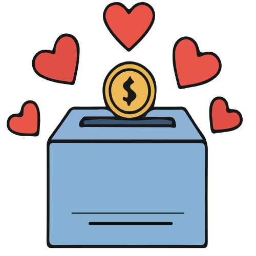

Track donations made to different charities, including the amount, the charity name, dates, and personalized messages. Gain insights into your organization’s total community contributions over time.
Employees can record their volunteer hours, the organizations they supported, and their experiences. This promotes a strong culture of community involvement within PiXELL River.
Register the company for charity galas, community cleanups, or food drives. Manage event details and ensure proper coordination for PiXELL River’s community participation.